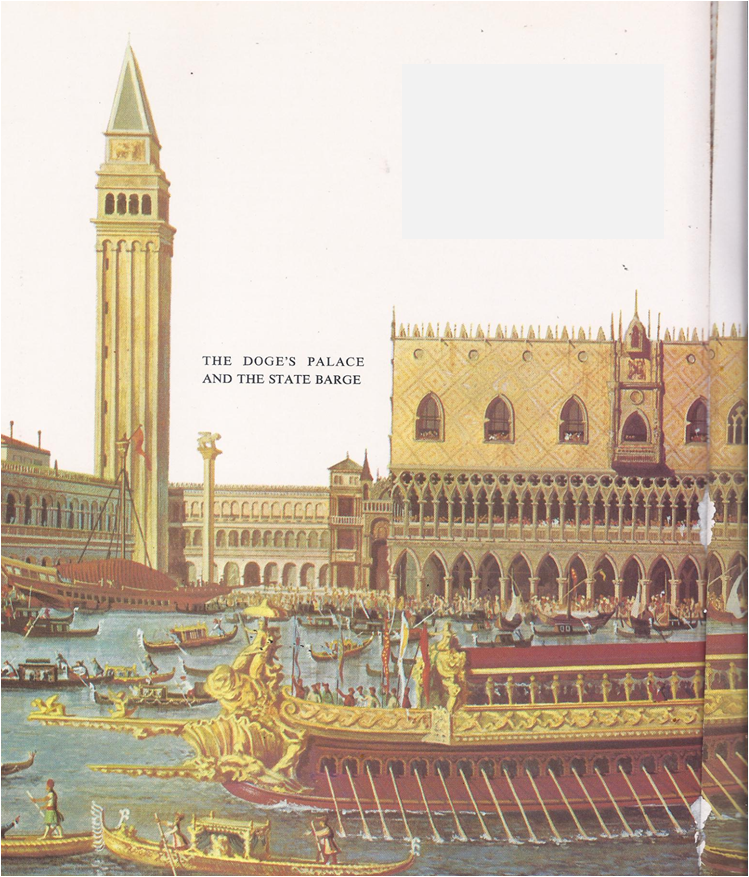

Here are som interesting facts about salt you might not know.
As old folk tale says "salt (is) more than gold". Some casual historians found out that this might be true fact. If we look around history we can see some places that got rich and had an abundance of salt.
Town of Salzburg or Venice among others. This might be true. Now about the more valuable than gold part. Salt was really useful. As a seasoning for food, in times, when there were no refrigirators it was yoused as natural conservant.
One of the examples from the olden days is from 1590. In Venice in 1590 33 ducats would buy you a ton of salt(as in 1000kg). Of all that 1 ducat was the cost of salt, 3 were the shipment. And the rest you ask? Profit and taxers. So no, salt was not more valuable than gold.
Let us shift to vocabulary now. Salt is a basis of a lot of words for example salary and salad. Both come from latin sale. Salary was the amount of salt given to each soldier and salad came from salt on vegetables. Let us stick to the Romans. They really must have loved salt.
Not only for food. For example when they captured Carthage after the third Poenic war they salted all the ground. Why would they do that you might ask. It is really simple. No crops can grow on salted land. Thus they made the location not good for setling for at least a few decades if not centuries.
Linked with this is the old superstition that spilling salt brings bad luck. Judas spills salt on Leonardo da Vinci's last supper. And to close this all we return to salt. Amethyst Bamboo 9x , which is a Korean-made salt that costs about 80 cents per gram, may be the most expensive in the world.
The price comes from long and difficult manufacturing process. Salt is roasted 9 times in a bamboo stick in temperatures exceeding 750° celsius. One store says the resulting delicacy “smells like something dragons use to season their victims before eating them.”
Salt is nice, tasty and in small amounts even good for your health. But remember, it has never been more valuable than gold, you should not eat too much of it and mainly you can buy it really expensively.

|

|
|
|
|